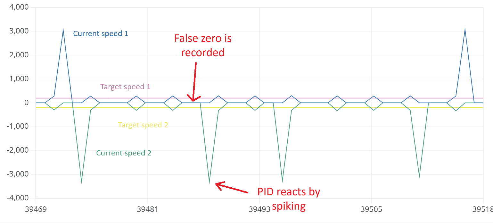
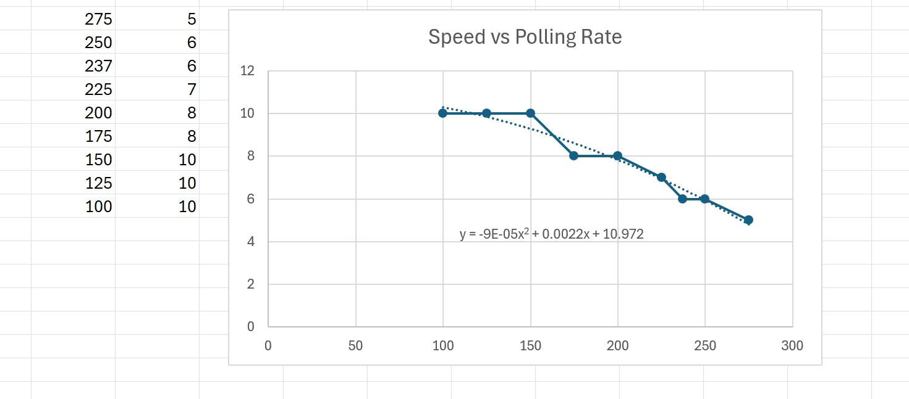
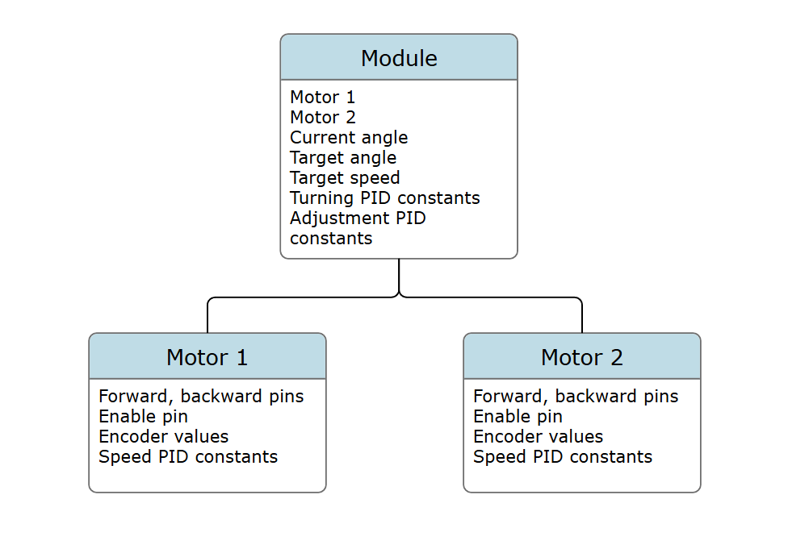
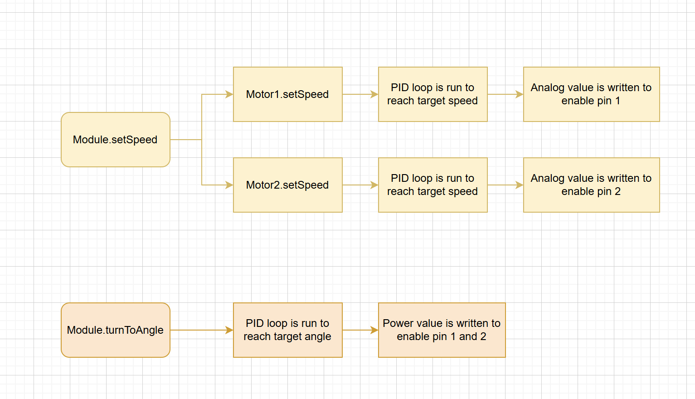

Differential Swerve Drive Module
2024 | In Progress
After graduating from FIRST robotics, I decided to try and code my own differential swerve module as a fun challenge in programming control systems. Since I was directly controlling two DC motors with encoders using an ESP32 and H-Bridge chip, I had to code everything from the ground up. This experience taught me to write lower level code that I took for granted in FRC
How it works:
A swerve module is a wheel that has two axes of rotation instead of one, meaning the wheel can spin forward and backward but can also be individually steered.
A differential swerve drive utilizes two motors and cleverly arranged gears to achieve this as shown below:
If the two motors spin at the same speed in opposite directions, the wheel will spin like normal
If the motors spin at the same speed in the same direction, the entire wheel will steer


The code:
Check it out!This project had two main aspects, the low level motor controllers, and the high level classes that allow for the entire module to be controlled using straightforward commands
Low level code:
The motors used are N20 DC motors with encoders. The two motors are controlled with an L293D chip that allows for a range of inputs that will vary the voltage. Because of the need for precise control of the motor speed, we need encoders on the motor to monitor the number of revolutions and adjust the speed accordingly.
The speed is controlled with a PID feedback loop, which works by finding the error term (the distance away from the setpoint) as a function of time, the derivative of the error term, and the integral of the error term. In this case our setpoint would be a certain RPM:
Using this structure, it was quite straightforward to program a simple position PID controller. However the complexity came in when I tried to implement a speed controller.
Programming a speed controller
Programming a speed controller consisted of using the same PID loop described above, but instead using (target speed - current speed) as our e(t). The problem came when calculating the current speed, which was found using the formula:
(current encoder count - previous encoder count)/elapsed time.
The problem was that the clock cycles ran faster than our encoder ticks, especially at low speed, meaning the current speed would read as zero and the PID would overcompensate. This would lead to shaky movement patterns, which can be observed in this graph:
This could be solved by polling for the speed every few cycles, instead of every cycle. Implemented as follows
The following results were found with a poll rate of 30, meaning that the speed was calculated every 30 clock cycles

The problem with polling every few cycles is apparent: the loop is slow to react and the adjustments are blocky. This presented a new challenge. I had to find the lowest possible poll rate so that our PID curves would be smooth, but so low that our PID loop would report false zeroes. Additionally, I observed that different speeds had different optimal poll rates. So I came up with the solution of having a dynamic poll rate.
With this idea, I used a few test values to construct an equation relating speed to poll rate.
Using this equation presented a new challenge, as the microcontroller would have perform computations every clock cycle, which slowed it down greatly, and since I eventually wanted the target speed to dynamically change with user input, I created a lookup table with ~400 entries so that polling rate values could be retrieved with O(1) time complexity

High level code:
The class structure was as follows:
The motors were driven using motor classes, which contained variables for things like pins and encoder counts
The motors were then coordinated using a module class, which contained two motors, and attributes such as target angle, target speed, and current angle
The current angle was obtained using this formula
Module functions:
The module functions such as setSpeed or turnToAngle would call the motor functions together to keep them coordinated
Now we could define a target speed and target angle and we could make our module class could turn to the target angle, then get to the target speed, all in one update function:
Solving the drifting problem:
There was still an issue: when the set speed function was running, motors 1 and 2 ran at slightly different speeds due to tiny differences, and the entire module began to drift. When the error got above 3 degrees the module would try to turn back to adjust it, causing jittery movements.

To combat this, I implemented an error adjustment algorithm in the setSpeed function. This algorithm detected when the module was drifting towards one side, and would use PID to proportionally adjust the speeds to counteract the drift and keep our module straight.
This double nested PID loop ensured that the module would autocorrect itself when it drifted
Our control system now had three PID loops! One for reaching a target angle, one to reach a target speed, and one to make microadjustments and ensure our module stayed straight.
Resulting values:
The module reaches a target speed of 200 while staying within 0.1 degrees of a target angle!
Creating a webpage to log data:
One of the reasons I chose the ESP32 microcontroller for this project was for it's built in Wifi, meaning I could use it to host a webpage displaying necessary stats. I put together a quick webpage that used sliders to quickly log data and export it to a spreadsheet. Doing this made recording data a more convenient process and allowed me to collect a much higher volume of data.